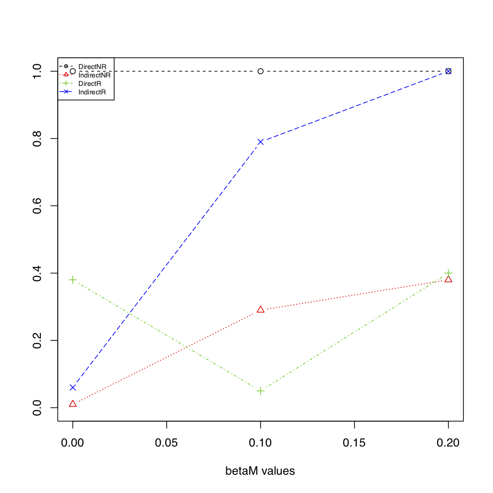

R/reverseC.R
reverseC-package.RdThis package contains methods to run mediation analysis and MR with reverse causality. It contains functions to simulate the performance of mediation analysis and three MR methods (Egger regression, IVW and median) and functions which provide estimates and p-values of direct and indirect effects given a dataset.
This package examines the performance of Mendelian Randomization (MR) and Mediation Analysis methods in the presence of reverse causality.
The reverseMRsim function in the reverseC R package examines the performance of Mendelian Randomization (MR) methods in the presence of reverse causality. Through simulation studies, this R function examines the type 1 error rate and power for 3 popular MR methods when the role of the intermediate phenotype and outcome were correctly specified and when they were reversed (i.e. reverse causality).
nSNP is the number of SNPs generated from a binomial distribution for n subjects (input n) for a given minor allele frequency (input vector MAF).
For the SNPs Xi, the mediator/ exposure M is generated from a normal distribution with the variance (input varM) and the mean as follows:
\(E[M] = \gamma_0 + \Sigma \gamma_x * X_i\)
All of these values are inputted by the user (i.e. the intercept gamma0, and the genetic effect size as a vector gammaX).
The outcome Y is generated from a normal distribution with the variance (input varY) and the mean as follows:
\(E[Y] = \beta_0 + \beta_M * M\)
All of these values are inputted by the user (i.e. the intercept beta0 and the effect of the mediator directly on the outcome as betaM).
After the SNPs X, mediator M, and outcome Y are generated, then the reverseMRsim function compares the power and type 1 error rate of the following 3 methods to detect the path from M to Y: Egger Regression, the Median Weighted Approach, and the Inverse Variance Weighted (IVW) Approach.
For 1,000 subjects (n=1000), we generated 10 SNPs (nSNP=10) with a minor allele frequency of 20% (specified by MAF) that have a genetic effect size of 0.4 (specified by gammaX) on the normally distributed mediator and the mediator has an effect size varying from 0, 0.2 to 0.3 (specified by betaM) on the normally distributed outcome. We considered 3 MR approaches: Egger Regression, the Median Weighted Approach, and the Inverse Variance Weighted (IVW) Approach.
For the example, we get corresponding plot. In the plot below, the methods ending in NR have the true outcome as the outcome where as the methods ending in R have the true outcome reversed with the mediator. When the mediator and outcome are reversed, the Egger regression and the Median Weighted Approach have an inflated type 1 error rate. While the IVW approach does not have an inflated type 1 error rate, there is very little difference in the IVW approach if the mediator and outcome are reversed, which implies that this approach cannot easily distinguish the causal relationship between the mediator and outcome.
These functions examines the performance of mediation analysis methods in the presence of reverse causality.
library(reverseC)
?reverseMAsim # For details on this function
reverseMAsim(n = 1000, pX = 0.2, gamma0 = 0, gammaX = 0.2, varM = 1, beta0 = 0, betaX = 0,
betaM = c(0.1, 0.2, 0.3), varY = 1, nSim = 500, nSimImai = 500, SEED = 1, plot.pdf = T,
plot.name = "reverseMAplot.pdf", alpha_level = 0.05)
reverseMAsim(n = 1000, pX = 0.2, gamma0 = 0, gammaX = 0, varM = 1, beta0 = 0, betaX = 0.2,
betaM = c(0.1, 0.2, 0.3), varY = 1, nSim = 500, nSimImai = 500, SEED = 1, plot.pdf = T,
plot.name = "reverseMAplotDirect.pdf", alpha_level = 0.05)
reverseMAsim(n = 1000, pX = 0.2, gamma0 = 0, gammaX = 0.2, varM = 1, beta0 = 0, betaX = 0.2,
betaM = c(0.1, 0.2, 0.3), varY = 1, nSim = 500, nSimImai = 500, SEED = 1, plot.pdf = T,
plot.name = "reverseMAplotBoth.pdf", alpha_level = 0.05)
The example code produces this plot: 
install.packages("devtools") # devtools must be installed first
devtools::install_github("SharonLutz/reverseC")
MR.Egger is the Egger Regression approach to MR.
Bowden J., Davey Smith G., & Burgess S. (2015). Mendelian Randomization with invalid instruments: effect estimation and bias detection through Egger regression. International Journal of Epidemiology, 44(2), 512-525.
MR.IVW is the Inverse Variant Weighted approach to MR.
Burgess, S., Butterworth, A., & Thompson, S. G. (2013). Mendelian Randomization Analysis With Multiple Genetic Variants Using Summarized Data. Genetic Epidemiology, 37(7), 658-665.
MR. Median is the Median Weighted approach to MR.
Bowden, J., Davey Smith, G., Haycock, P. C., & Burgess, S. (2016). Consistent Estimation in Mendelian Randomization with Some Invalid Instruments Using a Weighted Median Estimator. Genetic Epidemiology, 40(4), 304-314.
Useful links: